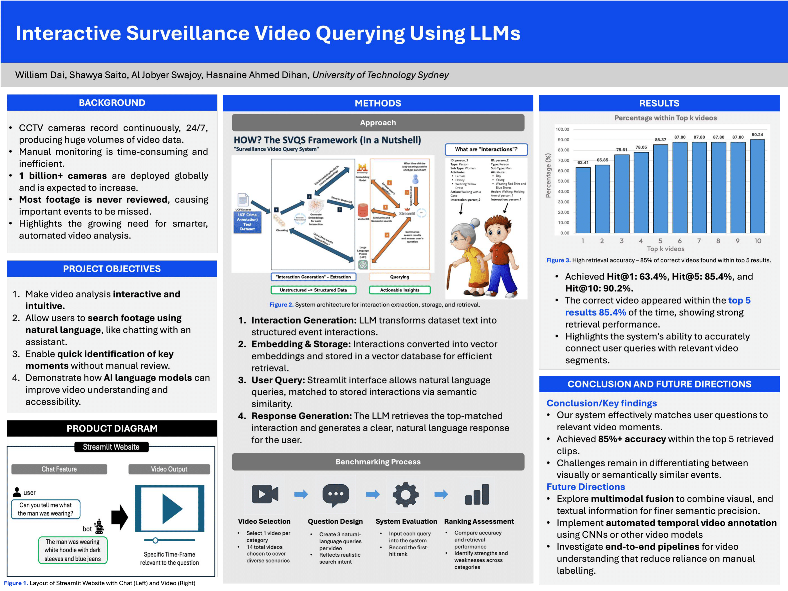

Industrial Capstone Project – Interactive Surveillance Video Querying

For my Master of Data Science capstone project, I worked with a team to build a system that lets users search surveillance footage using simple English questions. Instead of watching hours of video, users can ask questions and quickly find important moments. We worked on this project for three months, doing research, testing ideas, fixing errors, and improving our solution with feedback from an industry partner. This project helped me build strong skills in data analysis, machine learning, teamwork, and solving real-world problems.